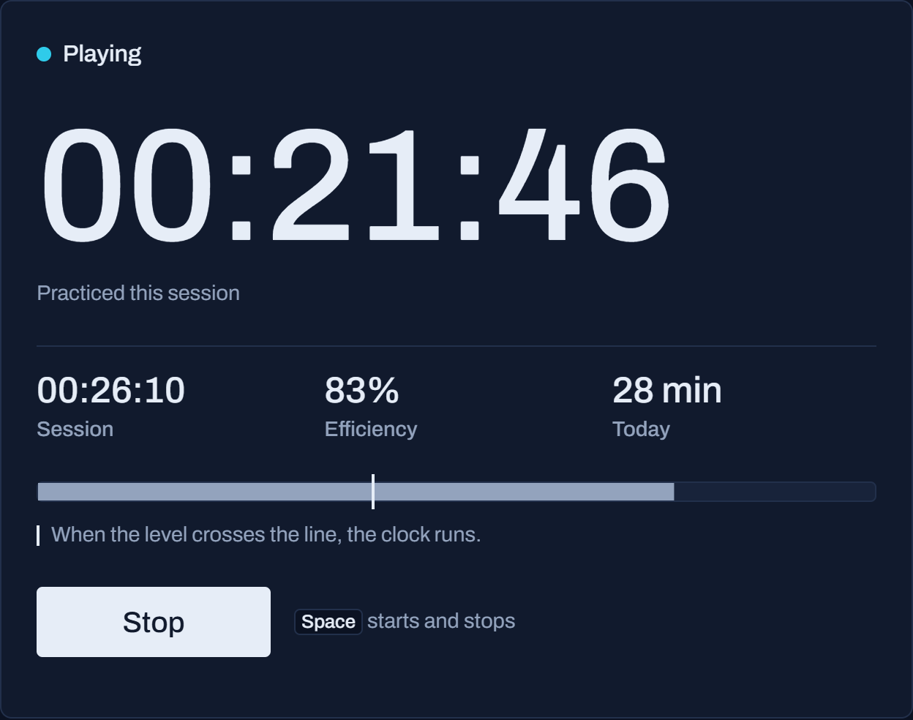

practicemeter
A practice timer that counts only the minutes your instrument sounds.

Lit while the microphone hears you playSound has to rise 6 to 24 dB over the room for 150 ms.
A practice timer that counts only the minutes your instrument sounds.

Lit while the microphone hears you playSound has to rise 6 to 24 dB over the room for 150 ms.